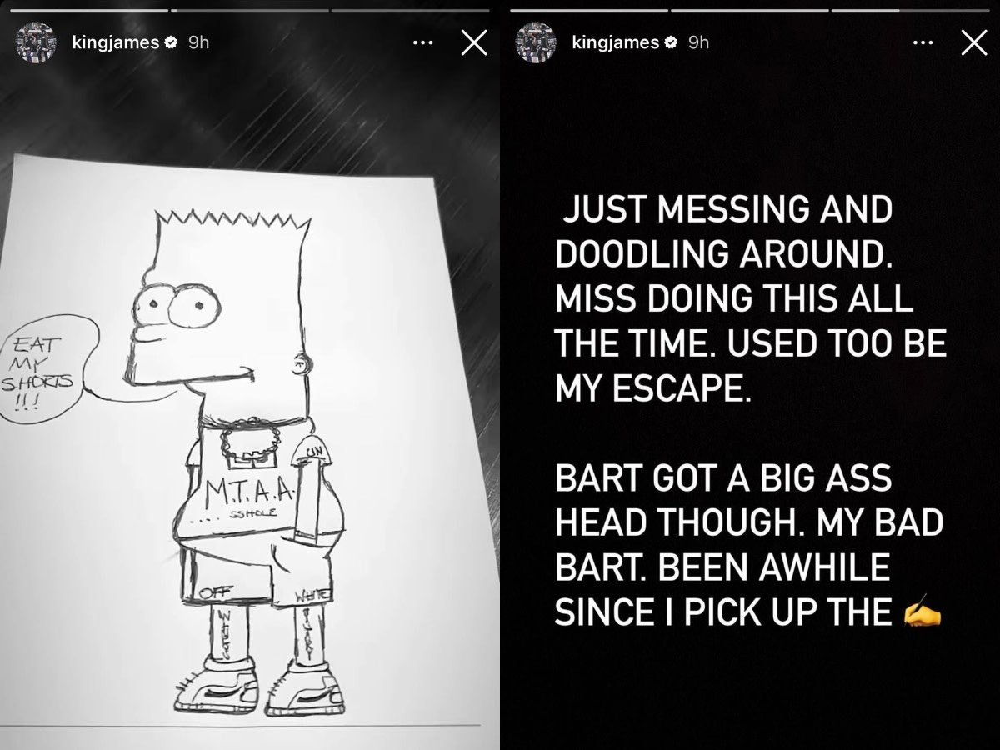

This is a website dedicated to the team that makes basketball shine.
1) Lebron Raymone James
Click here to see an example of the GOAT
Some of Lebron's Greatest Moments can be found below, like his amazing drawing of Bart Simpson:
2) Anthony Davis
Now